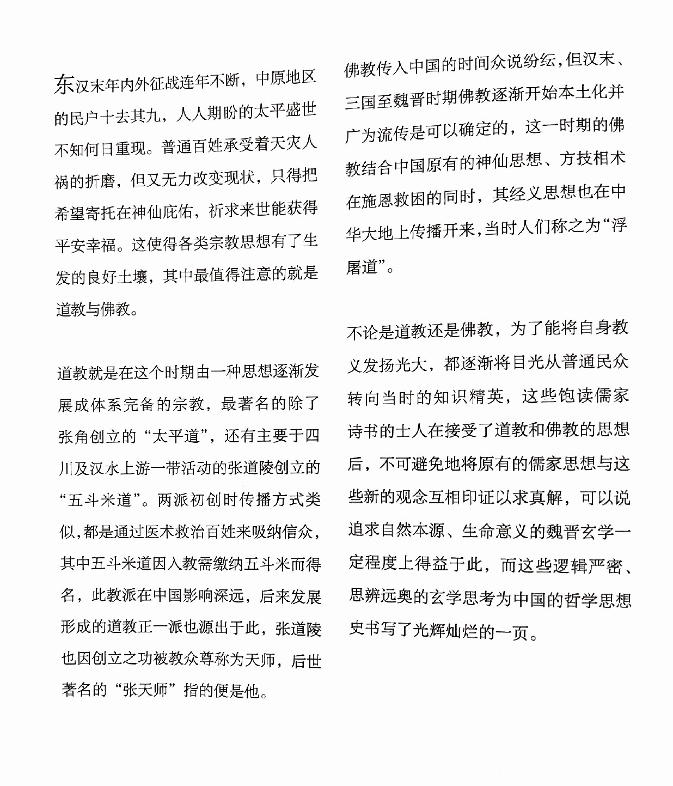
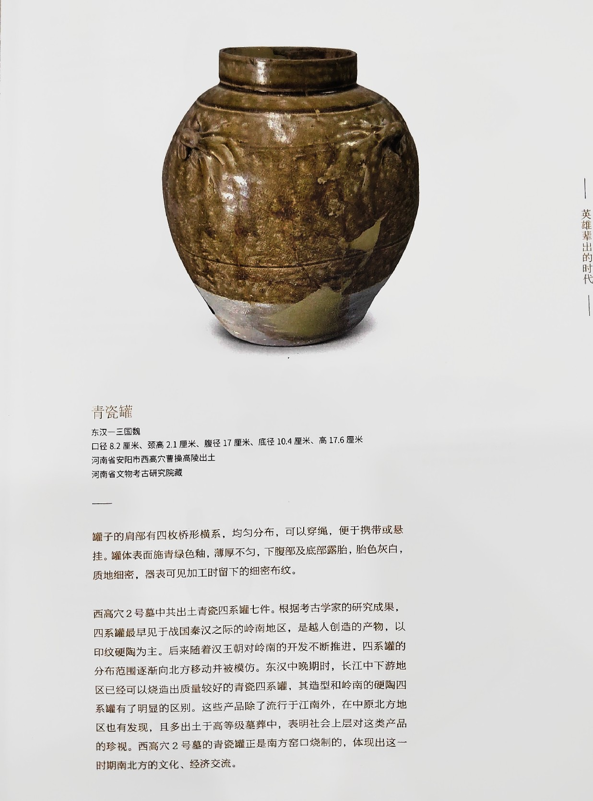
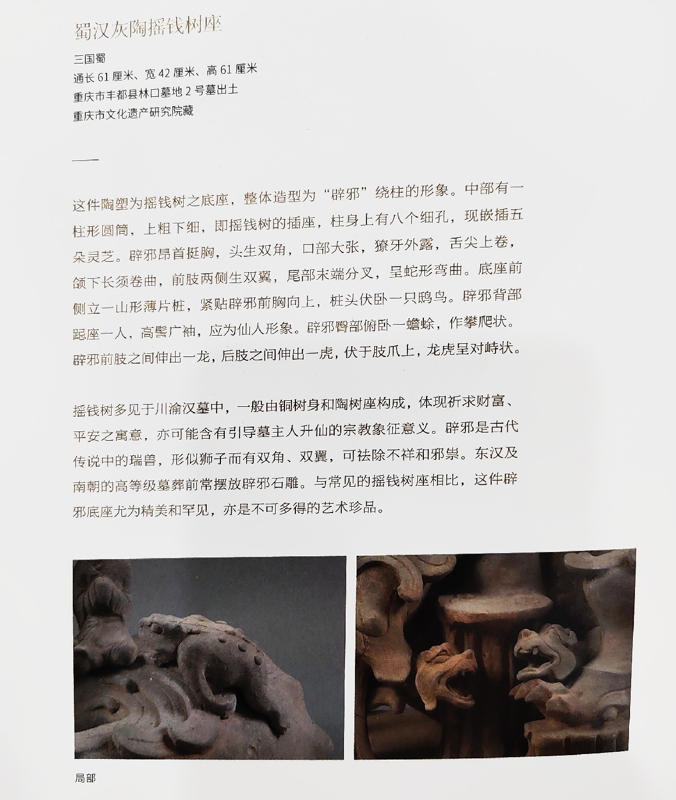

书籍信息
- 标题: 寻踪三国：文物里的魏蜀吴新图景
- 作者: 中华世纪坛艺术馆（主编）
- 出版商: 中信出版集团
- ISBN: 9787521721287
- 总页数: p. 245
阅览日志 1
- 阅读期: 2023/7/16 ~ 2023/7/16
- 星级评分: 4.5
- 评论: 挺好看的！通俗易懂图挺多
- 总阅读时间: 历时 1 小时 53 分
租借记录 #1
- 租借日期: 2023/7/15
- 租期: 60 天
- 归还截止日期: 2023/9/13
- 归还日期: 2023/7/16
- 租借于: 图书馆
- 备忘录:
笔记列表
#1
- 日期: 2023/7/16 上午12:37
- 页数: p. 0
- 笔记类型: 书籍内容
- 内容: 目录页，参考用
#2
- 日期: 2023/7/16 上午12:53
- 页数: p. 0
- 笔记类型: 书籍内容
- 内容: 六博
#3
- 日期: 2023/7/16 上午12:34
- 页数: p. 6
- 笔记类型: 书籍内容
- 内容: 洛阳宫城示意图+收集到的一些可用文献资料
#4
- 日期: 2023/7/16 上午12:36
- 页数: p. 12
- 笔记类型: 书籍内容
- 内容: 铜车马：等级与荣耀
#5
- 日期: 2023/7/16 上午12:51
- 页数: p. 24
- 笔记类型: 书籍内容
- 内容: 陶院落，军事作用
#6
- 日期: 2023/7/16 上午12:52
- 页数: p. 39
- 笔记类型: 书籍内容
- 内容: 吃饭与食具
#7
- 日期: 2023/7/16 上午12:53
- 页数: p. 46 ~ p. 68
- 笔记类型: 书籍内容
- 内容: 汉代的文化艺术方面
#8
- 日期: 2023/7/16 下午1:51
- 页数: p. 73
- 笔记类型: 书籍内容
- 内容: 佩剑佩刀
#9
- 日期: 2023/7/16 下午1:51
- 页数: p. 82
- 笔记类型: 书籍内容
- 内容: 宗教
- 
#10
- 日期: 2023/7/16 下午1:52
- 页数: p. 102
- 笔记类型: 书籍内容
- 内容: 邺城、洛阳平面图
#11
- 日期: 2023/7/16 下午1:52
- 页数: p. 108
- 笔记类型: 书籍内容
- 内容: 小植你好可爱，和爹一样都很放荡不羁、喜好艺术！
#12
- 日期: 2023/7/16 下午1:53
- 页数: p. 132
- 笔记类型: 书籍内容
- 内容: 哎呀小权，野心都露出来了！
#13
- 日期: 2023/7/16 下午1:54
- 页数: p. 136
- 笔记类型: 书籍内容
- 内容: 东吴虎型石棺
#14
- 日期: 2023/7/16 下午1:55
- 页数: p. 138
- 笔记类型: 书籍内容
- 内容: 魂瓶！
#15
- 日期: 2023/7/16 下午2:09
- 页数: p. 148 ~ p. 161
- 笔记类型: 书籍内容
- 内容: 曹瞒（墓）相关
1-陶鼎
2-圭、璧（曹植墓）
3-墓的平面图
4-高陵出土石牌
5-7 部分其他文物 - 
#16
- 日期: 2023/7/16 下午2:12
- 页数: p. 162
- 笔记类型: 书籍内容
- 内容: 曹休墓相关
1-平面图
2-印章
3-4 带钩
#17
- 日期: 2023/7/16 下午2:14
- 页数: p. 169
- 笔记类型: 书籍内容
- 内容: 一点刘备/中山靖王刘胜相关
1-刘备身世之谜（鉴于此书考据并不严密，不可全信，他写曹瞒的时候还直接认为他是曹参之后）
2-3 “镇”
#18
- 日期: 2023/7/16 下午2:29
- 页数: p. 180
- 笔记类型: 书籍内容
- 内容: 衮雪！！它值得单独一个笔记❤️❤️
吐槽一下这本书这里的搞笑错误，详见p2，什么叫痛失夏侯惇啊！！
#19
- 日期: 2023/7/16 下午2:30
- 页数: p. 184
- 笔记类型: 书籍内容
- 内容: “会稽曹君丧躯”文字砖
#20
- 日期: 2023/7/16 下午2:31
- 页数: p. 188
- 笔记类型: 书籍内容
- 内容: 摇钱树！！
- 
#21
- 日期: 2023/7/16 下午2:32
- 页数: p. 199
- 笔记类型: 书籍内容
- 内容: 东吴的一些陶俑，话说俑真的在汉代三国墓葬好常见，好多长得都很可爱，太多了就不拍了！
#22
- 日期: 2023/7/16 下午2:33
- 页数: p. 200
- 笔记类型: 书籍内容
- 内容: 小权和武昌
#23
- 日期: 2023/7/16 下午2:43
- 页数: p. 214
- 笔记类型: 书籍内容
- 内容: 魏晋与狮子
#24
- 日期: 2023/7/16 下午2:44
- 页数: p. 220
- 笔记类型: 书籍内容
- 内容: 蝉纹金铛与貂蝉
#25
- 日期: 2023/7/16 下午2:45
- 页数: p. 233
- 笔记类型: 书籍内容
- 内容: 附录一些收集太杂乱了，什么都有，随便看看！